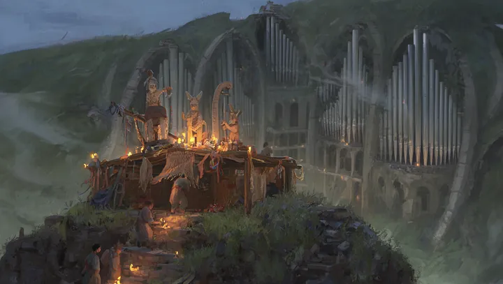
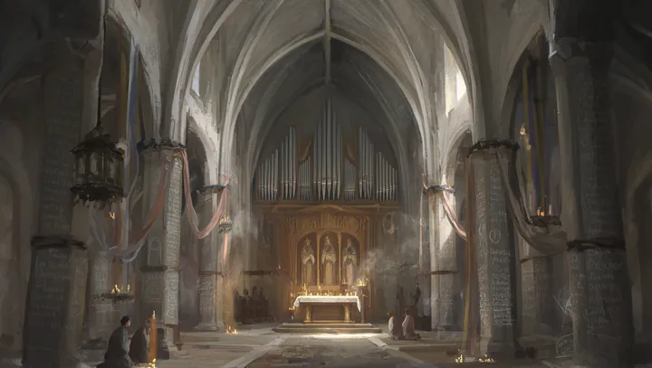
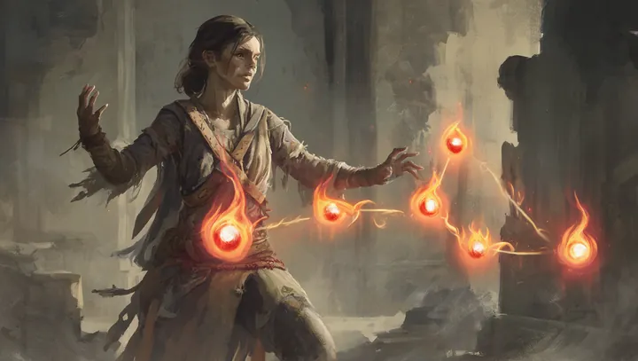
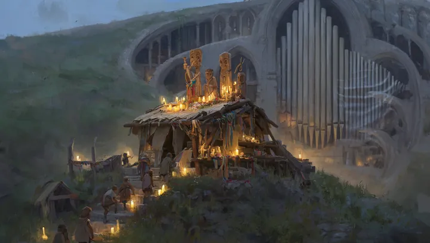
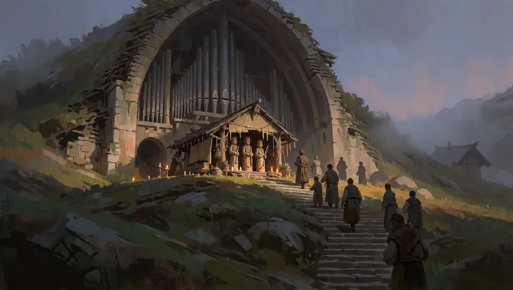
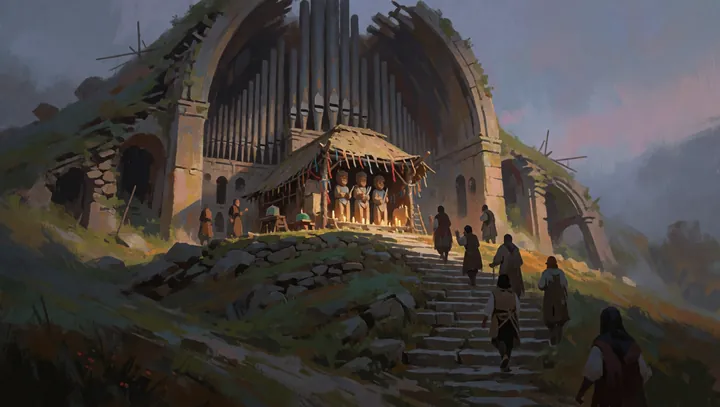

v1AIflux3-klein · s1101✓ picked



Serves one decision: what does the Hearth's holiest place look like when you first climb to it? Village faith built on the roof of a machine nobody remembers.



Best read of "faith on top of a machine": the ribs stay huge, the shrine stays small. Keep the three figures readable at this distance.